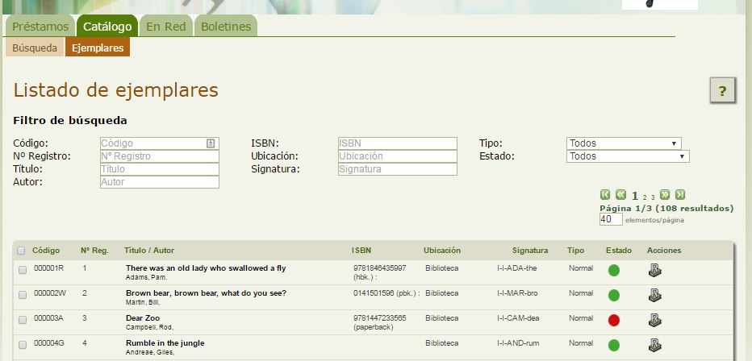
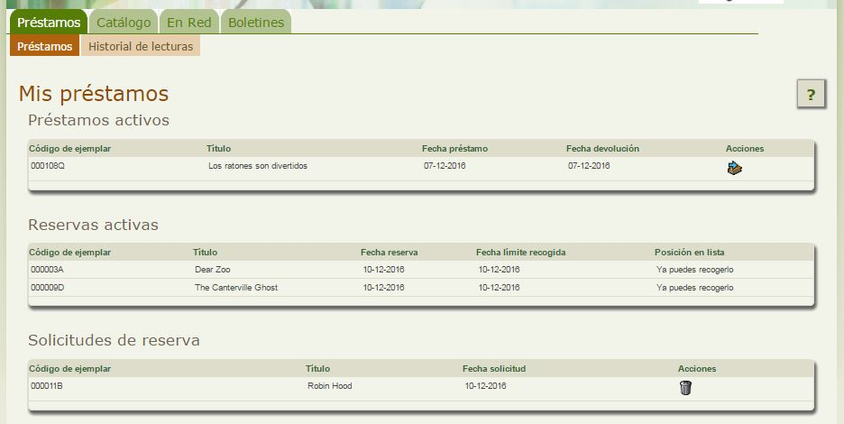
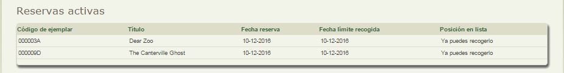

Realizar reservas de Ejemplares
Las consultas sobre fondos, nos permiten conocer detalles de los mismos, pero si lo que queremos es reservar algún préstamo, entonces lo que debemos hacer es una Búsqueda de Ejemplares.
Para ello haremos click en la pestaña Catálogo, opción Ejemplares y allí buscaremos el que estemos interesados.

Nos fijaremos en que dentro de la información que nos muestra de cada ejemplar, aparece:
- El campo Estado para indicar en Verde si está disponible o en Rojo si está reservado o prestado. Si está reservado, colocando el ratón sobre el círculo, nos indicará el número en lista de espera para ese ejemplar.
- El icono para realizar la Reserva de un ejemplar en concreto. Si ya existieran reservas sobre ese mismo ejemplar, nos indicaría el orden en la lista de espera sobre el mismo.
Una vez hayamos realizado la reserva de un ejemplar,
La reservas que vayamos realizando las podemos consultar en la sección Solicitudes de reserva de la pestaña Préstamos

Una vez el bibliotecario acepte nuestra solicitud de reserva, nos aparecerá en el listado Reservas activas que podemos consultar en la pestaña Préstamos.

En cuanto esté disponible y nos lo asigne el bibliotecario, tendremos un número de días limitado para pasar a recogerlo, sino quedará disponible para el siguiente lector en la lista de espera. Ese número de días es definido para cada biblioteca y debe ser informado por el bibliotecario, junto con el resto de normas de uso. En el ejemplo el número de días era 0, por eso la fecha de la reserva coincide con la fecha límite de

Abiesweb para Usuarios Lectores por Cristina Martín Bruna bajo licencia Creative Commons Reconocimiento-NoComercial-CompartirIgual 4.0 Internacional License.